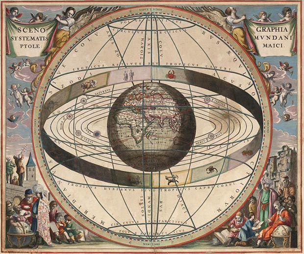

Астрологический прогноз событий на будущее
Основные
термины и определения:
Транзит (астрологическое
прохождение) - это астрологическое явление, во время которого
небесное тело (планета) проходит через знаки зодиака и создает
аспекты (геометрические углы) с другими планетами.
Трин – (Тригон) — аспект,
при котором планеты расположены на расстоянии в 120 градусов
друг от друга. Постоянно действующий аспект. Трин часто
называют аспектом счастья, он объединяет энергии двух планет,
которые при его наступлении действуют друг на друга.
Радикс – (Radix - начало,
источник) - гороскоп рождения.
Текущий
прогноз составлен с апреля по декабрь 2017 года.